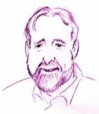

This is an archived copy of History Matters, provided by the Roy Rosenzweig Center for History and New Media. To explore this content in a new interface, visit Who Built America?.


Bill Bigelow has taught high school in Portland, Oregon since 1978. Between 1991 and 1993, he led workshops with teachers throughout the country using the Columbus myth to draw attention to racial biases in the school curriculum. He is an editor of the education reform journal, Rethinking Schools, and is the author of Strangers in Their Own Country: A Curriculum Guide on South Africa (Africa World Press, 1985), and The Power in Our Hands: A Curriculum on the History of Work and Workers in the United States (with Norm Diamond, Monthly Review Press, 1988). He has co-edited four books with Rethinking Schools: Rethinking Our Classrooms: Teaching for Equity and Justice (1994), Rethinking Columbus: The Next 500 Years (1998), Rethinking Our Classrooms: Teaching for Equity and Justice, Volume 2 (2001), and, with Bob Peterson, Rethinking Globalization: Teaching for Justice in an Unjust World (2002). Bigelow has also authored several teaching guides for films and videos, including most recently for the Academy Award-nominated film, Regret to Inform (1998).1. When did you start teaching and where have you taught?
My first “regular” teaching job began in the fall of 1978 at Grant High School in Portland, Oregon. But before that, in the 1973–74 school year, I taught for six months in an alternative high school in Cincinnati, Ohio, with seven other Antioch College students, and later I substitute taught in Dayton, Ohio. I consider the work in Cincinnati my first “real” teaching.
2. Which courses have you taught?
I’ve taught U.S. history, global studies, literature and U.S. history, literature and social change, and a catch-all freshman social studies course. I’ve also coached baseball and football—which is a different kind of teaching—and have advised the Model United Nations club.
3. Which are your favorite courses to teach? Why?
Global studies is my favorite course to teach because it focuses on the burning global issues of the day. I don’t have to convince students it’s important, which sometimes happens with U.S. History. I’ve been on leave for two years, but the last time I taught global studies was the year of the Seattle WTO protests. Being so close, in Portland, exposed students to the teach-ins and publicity prior to the meetings and demonstrations. It lent a sense of urgency to what we were doing in the classroom—dealing with issues of global sweatshops, the effect of “free trade” on poor countries, global warming, the conflict between “development” and indigenous cultures, and the like. There were so many connections that students were making, and the enormous amount of attention being paid to these issues by activists and media said to students: This is really important stuff.
The other course that I taught for five years and enjoyed tremendously was Literature and U.S. History. It was a two-period-a-day class that I co-taught with Linda Christensen. We could blend more seamlessly literature with history, writing with role-plays. It taught me how silly it is to have the curriculum chopped up into these meaningless categories of “English” and “history—as if you can think clearly about history, or anything else, without writing and reading—or as if you can have an ”English" class that simply lurches from novel to novel or from writing exercise to writing exercise.
4. What are the biggest themes that you try to convey?
The first thing I keep in mind is the Hippocratic oath: Do no harm. It works for teachers too. Most of the history classes I had in school were awful. They were filled with lectures and textbooks and little else. I don’t want to be that kind of teacher. So I begin from the standpoint that I want my students to come away from the class believing that studying history can be enjoyable and meaningful. In terms of broad themes what do I want them to learn? That history is not a series of dead facts. It’s made up of choices made by real people in real circumstances. I want them to think about the importance of race and racism. That from the moment Columbus arrived in the Americas and claimed a land he knew was occupied by other people, and announced that these people were intelligent, and hence would make good slaves, that racism would be an enormous factor in determining what went on here.
Similarly, I want them to think about the impact of social class and gender in explaining how America developed as it did. More recently, I’ve been “greening” my U.S. history curriculum, and looking at how the roots to today’s ecological crises can be found in cultural patterns that we can recognize from the very beginning of Europeans' presence here. I suppose that this is another overarching theme: History is not simply stories of the past, or a collection of facts—it’s about making explanations for the way things are today. It’s also about drawing inspiration from the past, recognizing that anything we appreciate today, anything about this country that is decent, got that way because people worked together to create it. I just finished listening to a radio series on the history of the Civil Rights Movement in five cities. And what comes across is how this was not just a movement of “great men” plus Rosa Parks. It was courage and sacrifice and ingenuity and determination, played out again and again all over the country, but especially in the South. U.S. society changed because in millions of big and small ways, people made it change.
5. How do you organize your U.S. history survey course?
I suppose you could say that I use a “modified chronological” approach. Although there is something appealing about organizing a course around large themes, it’s always seemed to make more sense to move through the decades in the order that things happened, looking for patterns as we go. That said, I also move back and forth from past to present. For example, if we look at Native American issues, I’ll pull that forward to look at the birth of the American Indian Movement, and aspects of what’s going on today. The other piece of this is that I play back and forth between history and students‘ lives. If we read excerpts from Frederick Douglass’s autobiography, where he describes his fight with Mr. Covey, the “slave breaker” who Douglass’s master rented him to, I may have students write about a time when they somehow defied injustice, however small. I don’t want to equate students’ actions with the huge risks that Douglass confronted, but I do want students to touch that place in themselves that may help them to empathize with what Douglass encountered. More than that, I want our classroom to honor struggles for justice of all kinds, big and small.
One of the things I need to say here is that I don’t try to “cover” all of U.S. History. I’ve always wished that they’d call this class something else besides “U.S. History,” because the title is a lie—it always has been. How can we teach all of U.S. history in one year? It promises something that no teacher can deliver. To attempt it is to guarantee that the curriculum will be a mile wide and an inch deep. In my classes we use lots of role-plays and activities that take time. A teacher has to choose: either I’m going to explore some aspects of history, explore some time periods, in real depth, and in a way that can excite students—or I’m going to make sure that my students get through that entire 1,000 page textbook. I’m going to teach a fact-rich, idea-poor curriculum, but, by golly, students will get it all. It’s no secret which side I’m on. However, I should add that the fact-rich, idea-poor curriculum is the one that is rewarded by today’s high-stakes testing movement. Standardized social studies tests pressure teachers to pack in as many conventional facts as possible. In my opinion, this kind of testing promotes shallow, as well as conservative, teaching.
6. What are your most important goals in teaching this survey course?
Once again, and I know this sounds very basic, but I want my students to leave the class believing that history can be interesting, that it can be meaningful—that it can help them make sense of what’s going on in the world these days. James Loewen writes in his book Lies My Teacher Told Me (New York: 1995), that five out of six of all high school students will never take another U.S. history course after they leave high school. So at the least, it’s my responsibility to leave students with the sense that, "Maybe there are some things here that I should learn more about.
Another important aim of my history teaching is to puncture the myth that a country is like a family. Too often, when textbooks talk about the United States they are filled with “we” did this, and “we” did that. But who really is the “we” that is being talked about? There is a coercive element to the language that is used in a history class—and in the media more generally, for that matter—that demands that students identify with the policies of the U.S. government and of U.S. elites: “We” went to war in Vietnam. “We” traveled west on the Oregon Trail. “We” need more oil. However, U.S. society has always been stratified based on race, class, nationality, language, gender—and it’s bad history, bad sociology to assume a common past. Some of “us” opposed the war in Vietnam. Some of “us”— Native Americans—were victimized by the Oregon Trail, and others of “us—African Americans—were excluded from many Oregon Trail wagon trains. Many textbooks talk about slavery as being a ”shameful period“ in U.S. history. But did African Americans ever have any reason to be ”ashamed“ of slavery? Shame is something the perpetrators of crimes against humanity should experience, not those they victimized. So a term like ”shameful period" takes sides, even as it masks its side-taking. I want students to understand that U.S. society has always been experienced very differently depending on a variety of factors—and it still is. And connected to this is that how history is taught is also not neutral.
7. What are the most effective assignments that you use in the U.S. survey course? What is good about them?
The best assignments are those that actually show social dynamics to students and don’t just talk about them. Role-plays and simulations do this well. One of my role-plays about U.S. labor history puts the class in the position of being Industrial Workers of the World organizers during the 1912 Lawrence, Massachusetts, textile strike and students need to work together to plan strike strategy. Another role-play uses a competition to make paper airplanes to demonstrate to students the principles of “scientific management” and how new work processes affected skilled workers and their families. A third looks at the origins of testing and tracking in the early years of the modern U.S. high school. I think this one is especially important because most U.S. history curricula don’t ask students to think critically about the origins of schools themselves. In this role-play, I portray a gung-ho new superintendent who wants to reform Central City high schools by introducing intelligence testing, and so-called ability grouping, and a more patriotic curriculum. Students portray Hungarian immigrants, members of the middle-class, wealthy executives, Black activists, and union members, and debate the superintendent’s proposals.
I don’t want to leave the impression that I think history classes should be exclusively role-play and simulation. I think the best classes are ones with lots of pedagogical diversity. But when teachers sit down to plan their classes, they ought to be asking themselves how they can bring social forces to life in the classroom—how they can give students classroom doses of real-world events. By all means, assign lots of reading—meaningful reading—and go ahead and lecture. But make sure that these are grounded in classroom experiences.
8. How has teaching changed over your career?
Teaching requires more than good intentions. It’s taken a lot of years to try to match my pedagogy to my values, to my vision of what schooling ought to be about. And I’ve still got an awfully long way to go.
The biggest revolution in my pedagogy happened during the five years that Linda Christensen and I taught together. Linda showed me the power of linking students' lives to the curriculum, largely through personal narrative and poetry. Also, it isn’t enough to *assign* writing, one has to *teach* it. I think I was like a lot of social studies teachers who expect English teachers to teach writing, and we’ll teach about history and the world. But what I’ve discovered is that the more rigorous I am in teaching writing, the more clarity and depth students will gain in whatever the content is that I’m trying to teach.
9. What is your most memorable teaching experience?
The most memorable teaching moment occurred at Jefferson High School during the 1988–89 school year, in Linda Christensen’s and my “Literature and U.S. History” course. We had just finished a role-play on the 1912 Lawrence, Massachusetts, textile strike that I mentioned earlier. The students had done a wonderful job with it—talking deeply about how they might organize the strike, tactics that they would use, and how those tactics relate to a larger social vision.
Before the activity began, I had brought in a Joe Glazer record with old Wobbly—Industrial Workers of the World—songs, and told them that this was called the Singing Strike, and workers used song as a way of maintaining unity. This in a strike of largely immigrant workers speaking maybe a dozen languages. So unity was especially difficult to maintain.
Just after we’d finished the role-play, we were sitting around discussing how they’d done and what had happened in real life when another teacher burst into the classroom to show us the lead article in Portland’s main weekly paper. It was titled “Are We Losing Jefferson?” It was a terrible article that made it seem like the halls of our school were filled with gang members and that teachers and students walked in fear everyday. It was racist, irresponsible, and wrong.
Immediately, students decided that they needed to organize a school-wide response, and that it had to be 100% student-led. It was as if they were still "in character—still exhilarated by having portrayed IWW organizers, and running the class on their own, making decisions from the standpoint of people in history who genuinely believed that they could change the world. Linda and I likely could have intervened, could have calmed them down, but we decided to step aside and allow students to use our two-period blocks as an organizing center for the next several days. Despite a fearful administration, our class organized several hundred Jefferson students, parents and community people to march on the newspaper’s offices and then to stage a rally at Waterfront Park. They made leaflets, gave speeches at the school and at the rally, talked to the media, organized a complicated system for transporting students downtown, served as march marshals—they did it all in cooperation with students from other classes. It was an explosion of creativity and activism. And it lingers as an extraordinary moment in my career.
Interview conducted by Kelly Schrum; completed in March 2002.